Financial App - Banqui
Resumen
- Categoría: Rediseño de app
- Cliente: Fintech Banqui
- Fecha: Mayo, 2020
- Prototipo: Figma
Producto: Prototipo de app mobile navegable en Figma. Objetivo: Rediseño, flujos e interación del prototipo. Logro: Rediseño en versión Android y iOS que permite una experiencia digital simple y personalizada.
Reto
Rediseñar el prototipo de la app mobile en versión iOS y Android de la Fintech Banqui, con la finalidad de que los clientes alcancen sus metas a partir del control de su dinero.
PROCESO
HUMAN CENTER DESIGN
Research
Benchmark
Screener survey
Entrevistas
Definition
Affinity Map
Empathy Map
Problem Statements
HMW
Ideation
User Flow
Prototype
Wireframes
Prototipado
Testing
Pruebas de usabilidad
Descubrimiento e investigación
Debido a que actualmente en el Perú las aplicaciones financieras de cuentas de ahorro no disponen de un asesor de ahorros personalizado, se realizó el benchmarking de las empresas mencionadas en los resultados de la investigación y se añadieron otras con fines similares. El research permitió tener una base con diseños UI, comparar la intuitividad en cada uno y reafirmar los objetivos de Banqui: (1) Brindar una excelente experiencia de ahorro. (2) Compromiso, honestidad y lealtad con sus clientes. (3) Claridad y seguridad en la digitalización de los procesos.
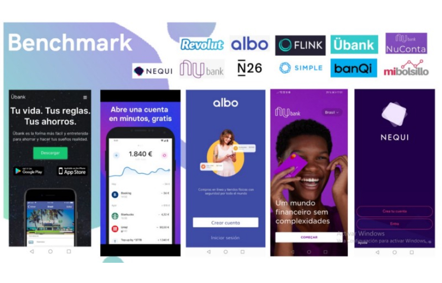Usuarios, quiénes son, qué necesitan, qué quieren
Antes de rediseñar se analizaron los resultados de una investigación previa, en la que se establece como user persona a María, analista comercial de 31 años y cliente financiera residente en Lima que busca mejorar su economía. Pain points encontrados en el user persona de María: (1) El crecimiento económico de María es lento. (2) Tiene un ritmo de vida muy agitado, con poco tiempo para ella y su hijo. (3) El sueldo que percibe es preciso para el mes porque debido a su ritmo de vida no tiene un control de gastos. Ha buscado opciones de ahorro pero no ha encontrado una en concreto. A partir de estos datos nuestro equipo de trabajo definió el target para el proceso de Recruiting mediante un screener survey.
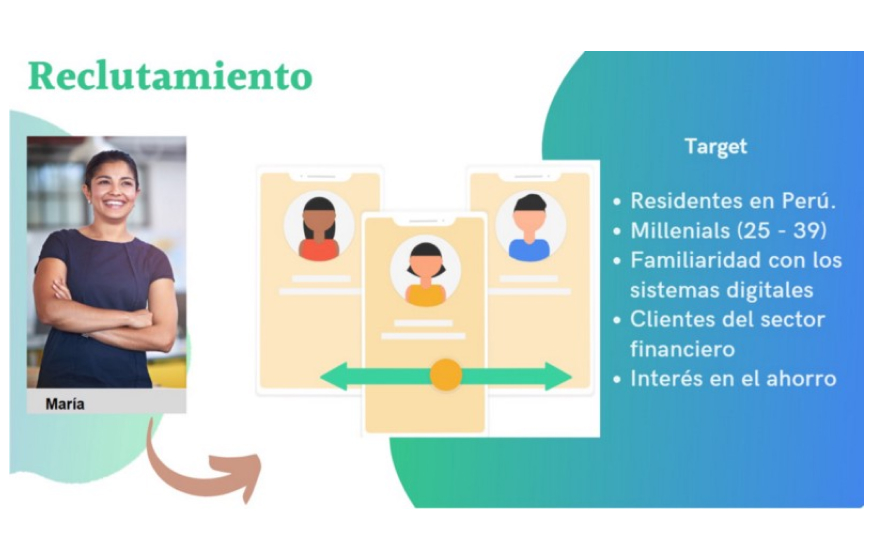Screener survey
Estuvo dirigido al target principal: millennials en el rango de 25 a 39 años, tecnológicos, clientes financieros, residentes en Perú y que tienen la necesidad de contar con asesoría financia que los ayude a mejorar en la gestión de sus ahorros.
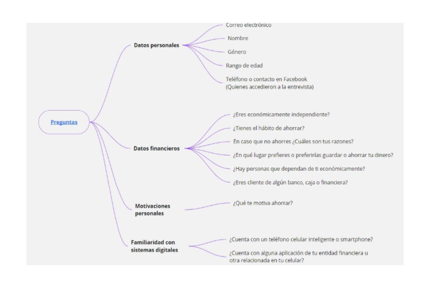 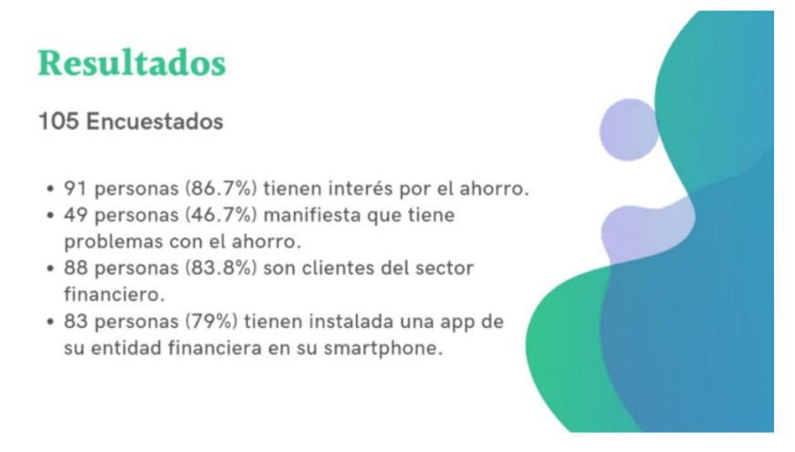Entrevistas
Los resultados del screener survey nos permitieron seleccionar a 10 personas para realizar las entrevistas a profundidad.
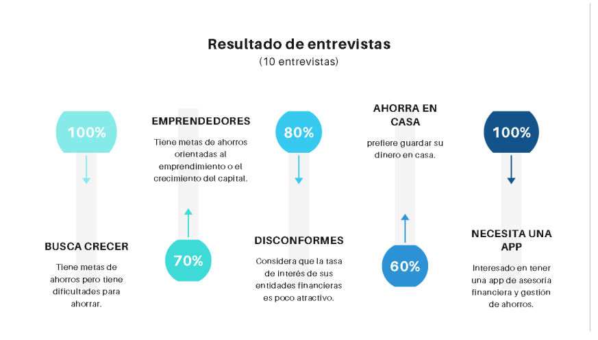 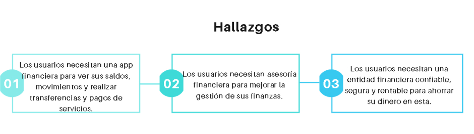Síntesis
Con toda la información recolectada se realizaron empathy map, affinity map, se establecieron los problem statements y los HMW.
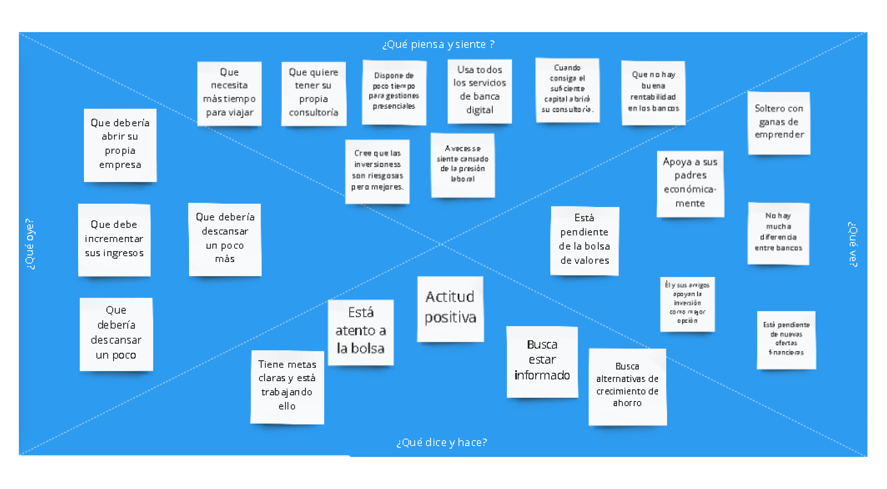 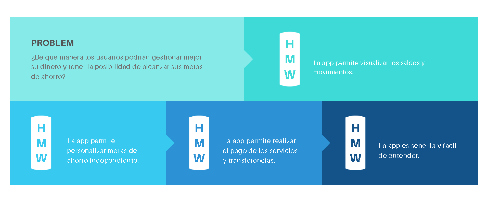Ideación
Luego de definir los requerimientos, se estableció el diagrama de flujo de la app y los wireframes para las vistas a rediseñar.
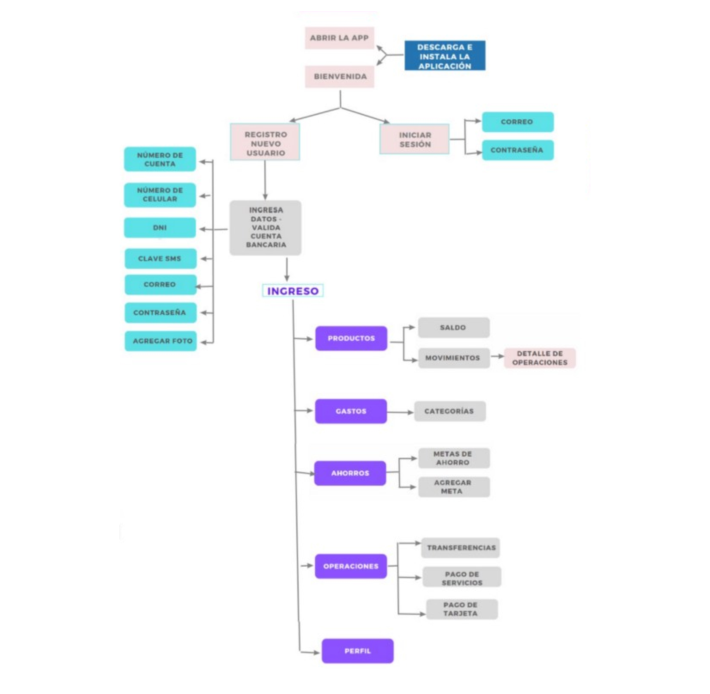 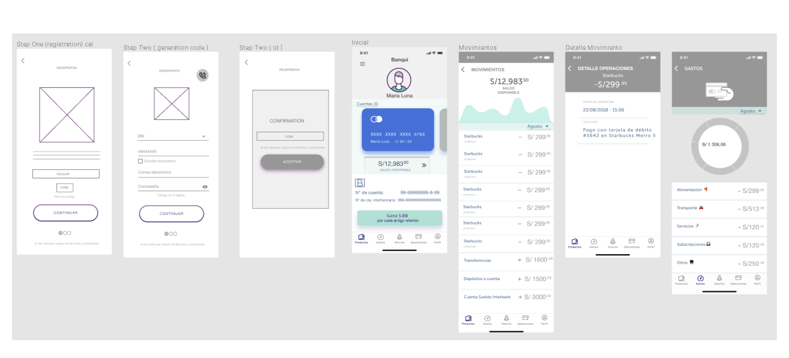Testeo
Se procedió a realizar el testeo con las personas entrevistas y también se midió el nivel de usabilidad con Maze para confirmar las vistas a rediseñar.
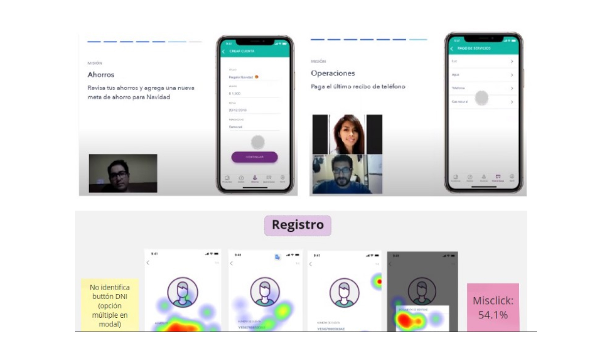Prototipo
Se realizaron iteraciones del rediseño y finalmente este fue el prototipo final.
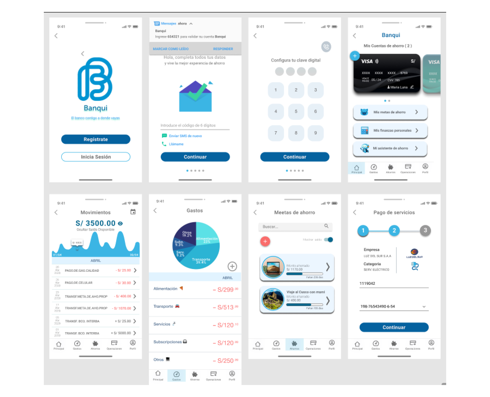